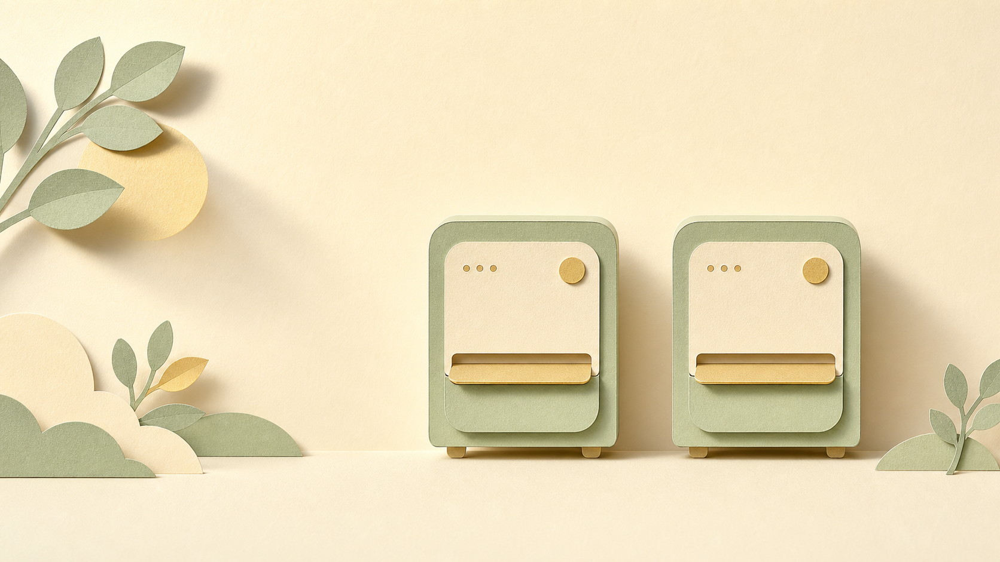
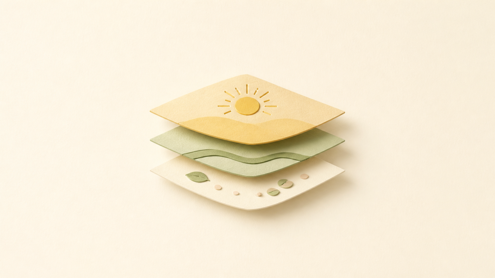
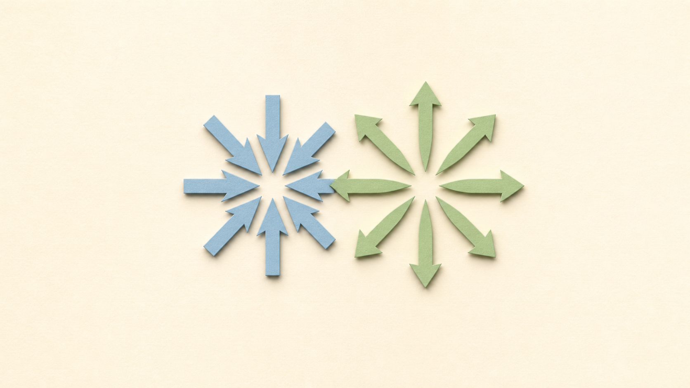
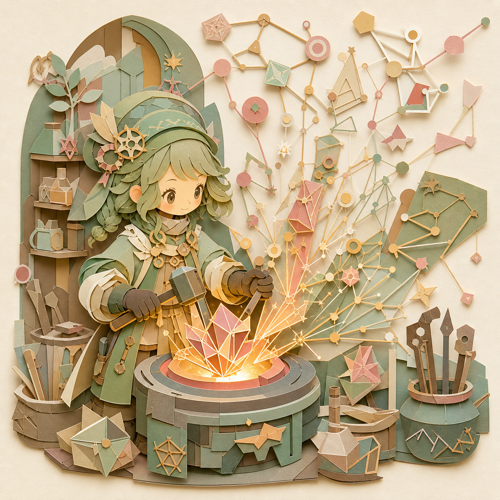
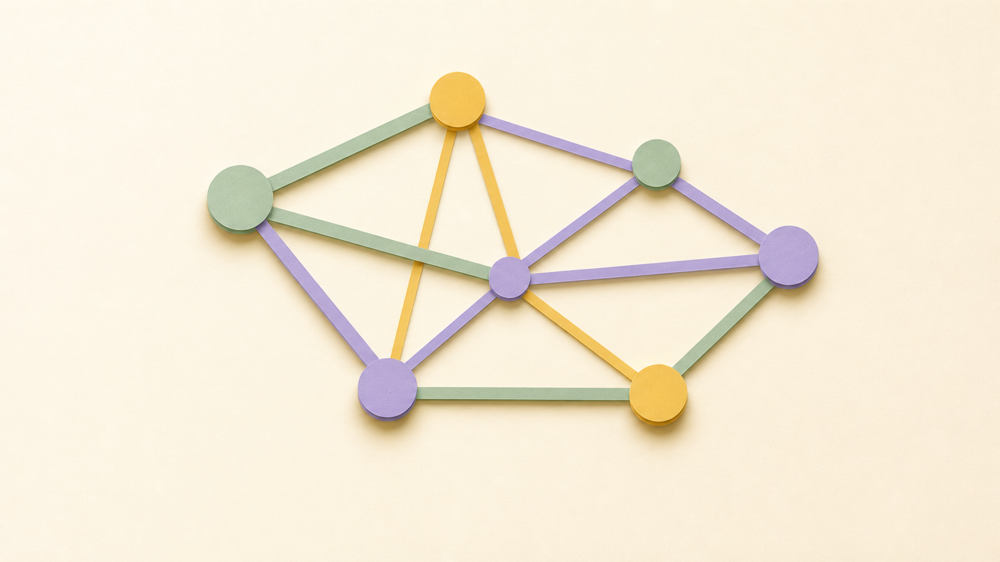
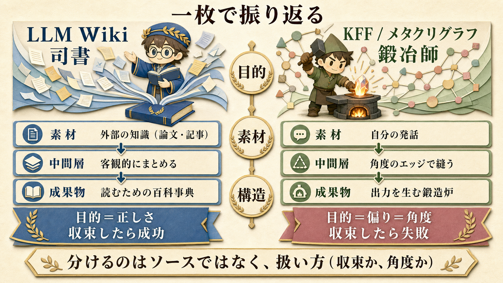

そっくりな2つの仕組みがある
どちらも「AIが、バラバラの知識を読み込んで、つなげて、整理してくれる」道具です。形だけ見ると、ほとんど同じに見えます。
LLM Wiki は、AI研究者の Andrej Karpathy が提案したアイデア。論文やWeb記事を放り込むと、AIが要約ページや概念ページを自動で作り、新しい資料が増えるたびに既存ページを書き直して、知識を「積み上げて」いきます。
KFF（ナレッジフォージング）/ メタクリグラフは、タムカイとOpiが考案した仕組み。自分の対話やラジオの文字起こしをAIが読み込み、概念どうしを線でつないで「ナレッジコア」という構造体に鍛え上げます。
「どちらも知識をつなげる仕組みでしょ?」という第一印象から出発して、実は目的が真逆を向いていること、そしてデータの作りも根本的に違うことを、具体例で腑に落とすこと。

似ているところは、本当に似ている
違いを語る前に、正直に認めます。両者は表面だけでなく骨格レベルで似ています。だから混同するのは自然なことです。
① どちらも「3つの層」でできている
素材をそのまま使うのではなく、間に「整理された中間層」を挟み、そこから最終的な成果物を生む。この三段構えが完全に一致します。
- 素材：論文PDF・Web記事
- 中間層：AIが書くWikiページ
- 使う：そのページを読む／執筆に使う
- 素材：対話・ラジオの文字起こし
- 中間層：ナレッジコア（構造体）
- 使う：本・スライド・記事を派生
② どちらも「AIが、つなげて、更新し続ける」
新しい素材が入ったら、AIが既存の中身を読み返して、関連を貼り直し、矛盾を見つけ、更新する。人間が手作業でやると続かないこの「片付け仕事」を、AIが疲れずに回す。ここも同じ発想です。
「中間構造を作ってから成果物を派生させる」というパイプラインの形そのものは、ほぼ同じ。KFF も現に大量の成果物を出しているので、「Wikiは読むため／コアは派生のため」という雑な切り分けは成り立ちません。違いはもっと深いところにあります。

目的が、真逆を向いている
同じ三層構造でも、中間層を「どっちに向かって」磨くかが正反対です。ここがいちばんの核心。

誰が読んでも同じ結論に至るのが理想。
本人ならではのつながりが残るのが理想。
LLM Wiki が目指すのは正しさです。10本の論文を読まなくても評価軸が4カテゴリにきれいに整理される。3本の論文に散らばった数字が「AIによる採点にはバイアスがある」という1つのパターンに集約される。誰がやっても同じ結論に収束することが、品質の証になります。
KFF が目指すのは、その逆の偏り＝個人の角度です。同じ概念（ノード）でも、誰が線を引くかで、つながり方が変わる。むしろ「みんなと同じ結論」に収束してしまったら、それは失敗です。タムカイという人の見方そのものを結晶化するのが目的だから。
| LLM Wiki | KFF / メタクリグラフ | |
|---|---|---|
| 向いている方向 | 正しさ（客観・収束） | 偏り（角度・発散） |
| 良い中間層とは | 誰が見ても同じ結論に至る | その人固有の線が残っている |
| 収束したら | 成功 | 失敗 |
「素材の違い」は、目的の結果にすぎない
「片方は論文、片方は自分の発話」── これがいちばん目立つ違いですが、実は目的が上流にあって、素材はそこから自然に決まる従属変数です。
LLM Wiki は「正しさ」を目指す
だから素材は、外から検証できる知識（論文・記事）になる。自分の感想を入れたら偏ってしまい、目的に反するので不適。
KFF は「偏り（角度）」を目指す
だから素材は、自分の口から出た発話になる。論文を入れたら角度が消えてしまい、目的に反するので不適。
結論：素材は原因ではなく結果
「論文か、自分の発話か」は、それぞれの目的から逆算して必然的にそうなっただけ。本当の分岐点は、その手前の「何を良しとするか」にある。
ついでに言うと、KFF にだけ「テクスチャー（言葉の外の肌触り）」という悩みが出てくるのも、これで説明がつきます。素材が自分の発話だから、整理された構造体になったときに「自分のはずなのに手触りがない」という違和感が生まれる。論文を整理したWikiに、その悩みは生まれません。
「じゃあ KFF に論文を入れたら、Wiki と同じ?」
ここまで読むと、こう思うかもしれません。「結局ちがいは素材でしょ。なら KFF に論文や書籍を入れたら、LLM Wiki と同じになるのでは?」── これは鋭い問いで、そして答えは「ならない」。その理由が、この記事でいちばん大事なところです。
まず事実として、KFF に外部ソース（論文・書籍）を入れることはできます。実際にKFFには、自分以外の人へのインタビューを束ねたコアや、各コアが持つ外部参照のレイヤーが既にあります。だから「外部ソース禁止」ではありません。
そのうえで、論文を1本入れたとき、あなたが「何を良しとするか」で道が2つに分かれます。さっきの「目的＝収束か発散か」が、ここでもそのまま効くのです。
- 評価軸を客観的に整理する
- 矛盾を解消し、誰が見ても同じ結論に
- → これは LLM Wiki そのもの
- なら本家Wikiを使う方が向いている
- 論文を自分の理論に接続する
- 「自分のあの概念をこの論文が補強/反証する」
- → これは KFF 固有の使い方
- 誰がやっても同じにはならない
つまり 分かれ目はソース（論文か発話か）ではなく、扱い方（収束か角度か）。同じ論文を入れても、道Aを選べばWikiに、道Bを選べばKFFになる。素材は問題の本質ではない ── これがこの章の結論です。
カギは「ノードは正確に、エッジは主観的に」
ここで矛盾に気づくかもしれません。「論文の中身は正確に保ちたい。でも角度をつけたい。両立する?」── します。層を分ければいいのです。
| 層 | 論文を入れたとき | 性質 |
|---|---|---|
| ノード（中身） | 論文の事実・データはそのまま正確に | 客観 |
| エッジ（つなぎ方） | 自分のコアに「補強/反証/例示」で縫い付ける | 主観（角度） |
事実は曲げない。曲げるのは「つなぎ方」だけ。 論文Aと論文Bを「同じトピックだ」とつなぐのは誰でもできる客観的な線（Wikiの線）。一方「この論文のデータは、自分のあの理論を反証している」とつなぐのは、あなたにしか引けない線です。後者がKFFの線。
論文という「事実のレンガ」は、誰が持っても同じ形。でも、そのレンガを「自分の建物のどこに、どう積むか」は人によって違う。KFFがやるのは、レンガを正確なまま受け取って、自分の設計図に沿って積むことです。レンガを溶かして平らにならすのがLLM Wiki。
だから論文・書籍コアを作るなら、それ単体で完結させないこと。単体で客観的にまとめるだけなら、LLM Wikiの劣化版にしかならない。価値が出るのは、外部ソースのノードを、自分の既存のコアに「角度のエッジ」で縫い付けたときです。

「線」の正体が、まるで違う
目的だけでなく、データの作りも別物です。ここを理解するには「リンク（線）」に4つの段階があることを知ると一気に見通せます。下に行くほど、線が「文章の中の文字」から「独立したデータ」へと進化します。
ハイパーリンク
ふつうのWebリンク。「場所（住所＝URL）」を指す。本文の中に書かれた文字で、一方向。引っ越し（ファイル移動）すると壊れる。
[詳しくはこちら](https://example.com/b)
wikilink LLM Wiki はここ
住所ではなく「名前」で指すリンク。アプリが「その名前のページ」を後から探して結びつける。だから引っ越しに強く、まだ存在しないページも指せる。ただし正体は依然「本文の中の文字」。
[[LLM-as-Judgeのバイアス]]
グラフDBのエッジ（一般的なもの）
ここで質が変わる。線が本文から飛び出して「独立したデータ」になる。線そのものに種類（型）や属性（重み・日付）を持たせられ、「AからBへ3つ先まで」のような経路検索ができる。
(田中)-[:購入した {日付:2026}]->(商品X)
メタクリグラフのエッジ KFF はここ
土台は Level 3 と同じグラフDB（Neo4j）。違うのは線に込めた意味。事実の関係ではなく「意味・思考のつながり」を、AIが鍛造時に判断して貼る。さらにベクトル（意味の座標）も併用する。
(概念A)-[:relates_to / exemplifies / shares_concept]->(概念B)
wikilink（Level 2）は、本のページの欄外に手書きで「→ 〇〇のページ参照」とメモするようなもの。メモを消せば線も消えるし、線そのものを取り出して数えたり検索したりはできません。
グラフのエッジ（Level 3-4）は、ページとは別に「索引カード」を1枚ずつ作って、線だけを束ねて管理するようなもの。線を取り出して「赤い線だけ」「3本先まで」とたどれます。
だから、ある重要な事実が見えてきます。LLM Wiki の「グラフ表示」は Obsidian というアプリが、本文中の [[ ]] を後から読み取って描いた絵にすぎません。データとしてのグラフは存在せず、見た目（ビュー）として現れているだけ。一方メタクリグラフは、グラフが最初から一次データそのものです。
KFF にとってグラフは「前提（基盤）」。
| 線について | LLM Wiki（Lv2） | メタクリグラフ（Lv4） |
|---|---|---|
| 線の正体 | 本文中の [[文字]] | 独立した一級データ |
| 種類（型） | 1種類だけ | 意味ごとに複数（relates_to 等） |
| 属性を持てる | 持てない | 持てる（重み・スコア） |
| 検索 | 全文検索どまり | 経路探索＋意味のベクトル検索 |
| グラフは | 事後の可視化 | 一次データ構造 |
| 最終的に | ずっと人間が読める文章のまま | 座標化し人間には読めなくなる |
最後の行が効きます。LLM Wiki は最後まで「人間が読むMarkdown」に留まる設計。KFF のコアは、いずれベクトル化されて人間には読めない構造体になることを前提にしている。だからこそ、人間が触れる「本・スライド・要約」という出力層を別に用意する ── これが両者の設計思想の根っこの違いです。
一枚で振り返る

3つの違い
正しさへ収束（LLM Wiki） vs 偏り＝角度へ発散（KFF）。中間層をどっちに磨くかが真逆。
外部の知識 vs 自分の発話。ただしこれは目的から決まる結果であって、原因ではない。
線が本文中の文字（wikilink）か、独立したグラフ＋ベクトルか。グラフが「絵」か「基盤」かの差。
ひとことで言うと
外の知識を、誰が見ても同じ理解に収束させる、読むための自動百科事典。
自分の発話を、固有の角度を保ったまま結晶化する、出力を生むための鍛造炉。
同じ「知識をつなげる」三層パイプラインを、逆向きの目的で回している。だから素材が変わり、構造の作りまで変わる。表面の相似に惑わされず、「何を良しとするか（収束か、角度か）」を見れば、2つはきれいに別物として腑に落ちます。
違いは「素材」ではありません。KFF に論文を入れてもいい。それでもLLM Wikiにはならない。同じ論文でも、客観的にまとめれば Wiki に、自分のコアに角度のエッジで縫い付ければ KFF になる。ソースではなく、扱い方（収束か、角度か）が2つを分けます。